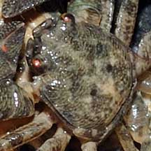
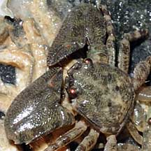
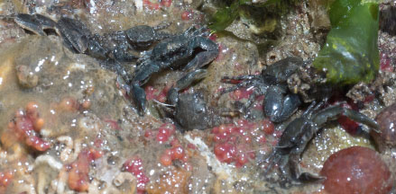
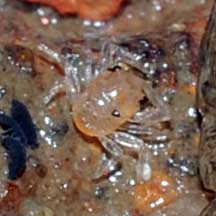

|
|
| porcelain crabs text index | photo index |
| Phylum Arthropoda > Subphylum Crustacea > Class Malacostraca > Order Decapoda > Anomurans > Family Porcellanidae |
| Tiny
brown porcelain crab awaiting identification* Family Porcellanidae updated Dec 2019 Where seen? This tiny porcelain crab is commonly seen on our Northern shores. Often many of these little animals can be seen under stones, scurrying away rapidly when the stone is lifted. After having a look under a stone, be sure to replace the stone the way you found it. Do it carefully so you don't crush any living things. Features: Body width less than 1cm, some can be much tinier. Body is somewhat rectangular or squarish. The body and legs are smooth, not hairy. Pincers about the same size or slightly bigger than the body. Usually a mottled grey or brown. Different species of porcelain crabs probably match this description. Species are difficult to positively identify without close examination. On this website, they are grouped by external features for convenience of display. |
 Changi, Jun 08 |
 |
 |
|
 Often, many individuals of different sizes seen together under a stone. Punggol, May 15 |
 A moult under? Seen under a stone. Changi, Jun 08 |
*Species are difficult to positively identify without close examination.
On this website, they are grouped by external features for convenience of display.
| Tiny brown porcelain crabs on Singapore shores |
On wildsingapore
flickr
|
| Other sightings on Singapore shores |
| |